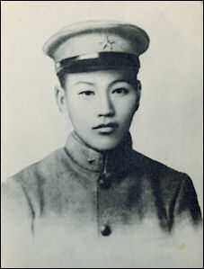

Birth
Jiang JieShi, also known as Chiang Kai-Shek, was born on October 31, 1887, in Ningbo, China, to a peasant family.
Early Years
Jiang grew up following Confucian morals. He read the Four Books and Five Classics (Confucian Canons), which were important classics of Chinese Confucianism. In 1906, Jiang went to Paoting Military Academy in North China. In April of 1906, Jiang also went to Japan and returned to China in the winter.  In 1908, Jiang traveled again, east to Japan, and was admitted to Tokyo Shinbu Gakko (振武学校). 振武学校 (1896-1914), originally named 成城 in chinese, was a military school established in 1896 for Chinese immigrants to Japan. In November 25, 1909, Jiang joined the Japanese Army, and served for the Japanese. During the XinHai Revolution, Jiang took part in the fight to overthrow the Qing. In 1923, Jiang went to the Soviet Union to study Soviet institutions. Back in China, Jiang became commandant of the Whampoa Military Academy.
Leading China
In 1925 after Sun Yat-sen’s death, Chiang became the leader of the Republic of China. He became known as Generalissimo. Jiang spent the following years trying to keep Communism out of China. Because of the
founding of the Chinese Communist Party (CCP) in ShangHai, 1921, political competition in China has began in mainland China. In 1924, the First United Front was formed, led by Jiang and Sun Yat-Sen. On July 9, 1926, Jiang launched the Northern Expedition, a military campaign to unify China after the Xinhai Revolution. In September 18, 1931, the Japanese invaded Manchuria (东北), and posed as a threat to both the Nationalists and Communists. This event was known as the Manchurian (Mukden) Incident, which also started the Japanese attempt of military expansion in East Asia. In December 1936, Jiang was captured by two of his generals, Zhang Xueliang and Yang Hucheng, to force Jiang to fight the Japanese and face the external threat posed by the Japanese. This was known as the
Xi'an Incident (Sian/XiAn). In 1937, the Nanjing Massacre, or the Rape of Nanjing, by the Imperial Japanese Army. By 1941, Jiang and Mao ZeDong, leader of the Chinese Communists, united to defeat the Japanese in 1945. While having the KMT (led by Jiang) fighting the Japanese on the coasts in NanJing, the CCP was focusing on increasing its supporters in China. After defeating the Japanese, the conflicts of controlling mainland China (Chinese Civil War) started again. Many people joined the CCP, after losing trust in the KMT. Many believed that if Jiang and the KMT has focused more on fighting against the Japanese than fighting against the CCP, less damage would have resutled. This was a major factor to the Nationalists' loss in the Chinese Civil War. The KMT was weakened by fighting the Japanese, and the CCP has grown in numbers during this time. On February 28, 1947, the
Februrary 28 Incident started. Suppression from the KMT caused anti-government uprisings. Throughout these incidents, later known as White Terror, thousands of Taiwanese were massacred. In 1949, the Nationalist government was overthrowed by the CCP.
Retreating
In 1949, following the defeat in the Chinese Civil War, Chiang Kai-shek retreated to Taiwan with his army and government to plan for retaking mainland China. In 1950, Jiang became President of the ROC in Taiwan. After seeing the destructions caused by Mao ZeDong's Great Leap Forward of 1958, Jiang planned for an attack to reconquer mainland China. On April 1, 1961, Jiang started the
Project National Glory (Guo Guang) event, in attempts to retake mainland China. On October 1971, Jiang's representatives in the United Nations were repeled, since the ROC has "illegally occupied all its affiliated agencies". In 1975, Jiang passed away due to a cardiac malfunction and renal failure in TaiPei, Taiwan.
Impact
Jiang’s accomplishments will never be forgotten, regardless of his defeat in 1949 by the communists. His contribution to the benefit of China as a whole was impactful and its effects are still seen on China today. Jiang’s retreat from mainland China has built the CCP’s conflicts with Taiwan. Jiang impacted both the development of China and Taiwan to the present day.
In 1901, Jiang married Mao Fumei and they were divorced in 1927. They had a son, Chiang Ching-Kuo. Jiang married Soong Mei-ling in 1927. Chiang Wei-kuo was Jiang’s adopted son.